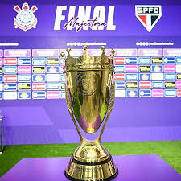
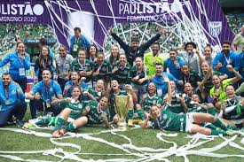
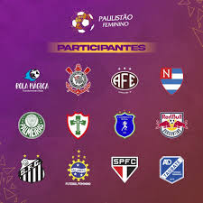
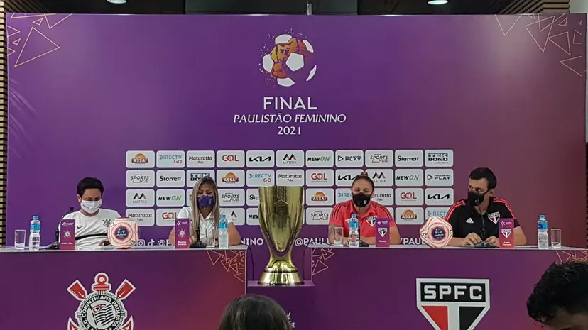
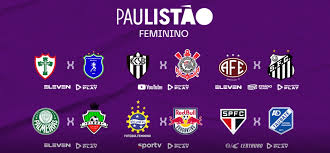

Campeonato Paulista Feminino
O Campeonato Paulista de Futebol Feminino é uma competição do futebol brasileiro disputada por equipes do estado de São Paulo filiadas à Federação Paulista de Futebol, a entidade organizadora do campeonato. Disputada oficialmente pela primeira vez em 1987 e de maneira ininterrupta desde 2004, é a principal competição feminina do futebol paulista.
A primeira edição oficial do Paulista feminino foi realizada em fins de 1987 e teve a Juventus-SP como campeã. Dez anos depois dessa edição pioneira, a FPF organizou uma nova competição com oito equipes, incluindo univesitárias. Além de Corinthians, Palmeiras, Santos e São Paulo, também participaram com times próprios o Mackenzie e a USP e, em parceria respectivamente com Portuguesa de Desportos e Juventus, a Universidade Sant'Anna e a Universidade São Judas Tadeu.
Após não ter sido disputado em 2002 e 2003, o Paulista feminino retornou ao calendário do futebol estadual com organização da Secretaria de Estado da Juventude, Esporte e Lazer e apoio da FPF. Na edição de 2004, houve 32 participantes na disputa — o maior número até hoje — entre equipes filiadas à Federação e times de universidades ou de prefeituras municipais do estado. Já sem a Secretaria de Estado da Juventude, Esporte e Lazer, a FPF reassumiu o controle total da organização do Paulista feminino em 2009, então apenas clubes filiados à entidade participaram da edição dessa temporada. Em 2016, a Federação criou um departamento exclusivo para a modalidade feminina, cuja primeira dirigente foi a ex-jogadora Aline Pellegrino.
Na primeira fase, as equipes se enfrentam dentro do seu grupo em jogos de ida e volta. Os quatro primeiros colocados de cada grupo avançam para a segunda fase da competição, sendo redistribuídos em dois grupos compostos pelo 1.º e o último de um grupo e o 2.º e 3.º do outro. Na segunda fase, as equipes disputam novamente partidas dentro dos grupos, em jogos de ida e volta. Os dois melhores colocados de cada grupo, se classificam para as semifinais que serão disputadas em partidas de ida e volta, sempre com a última partida de mando da equipe de melhor campanha na segunda fase. Com o fim da Copa do Brasil Feminina, a equipe melhor classificada que não está garantida no Brasileirão Feminino séries A1 ou A2, será indicada para disputa da preliminar que dá vaga a segunda divisão do campeonato nacional. Em 2018, por exemplo, essa vaga seria do XV de Piracicaba, mas como a equipe abriu mão, a vaga na série A2 ficou com o time de Embu das Artes.
